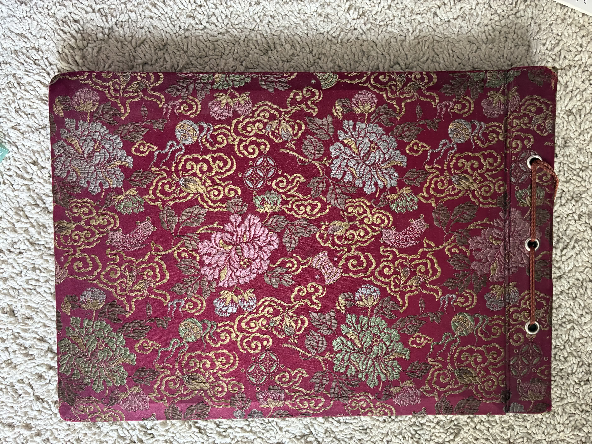
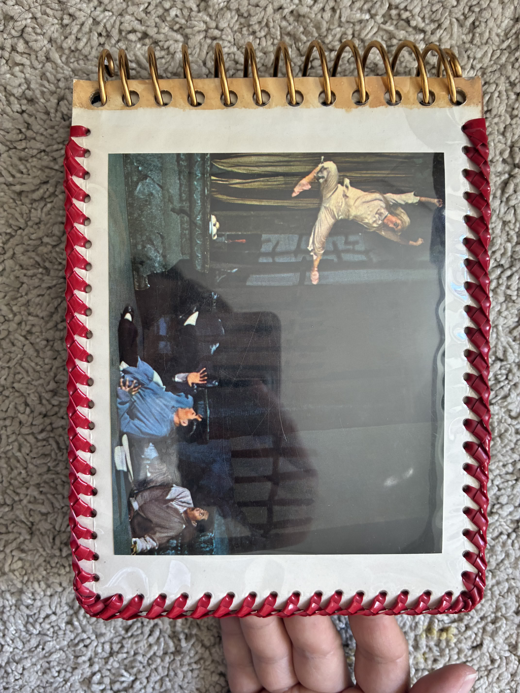
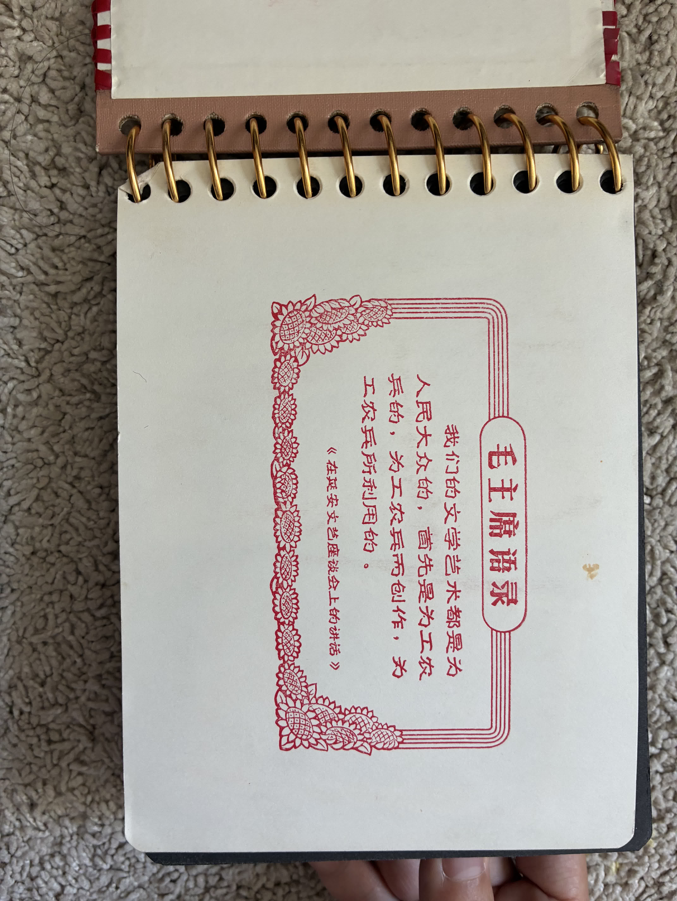
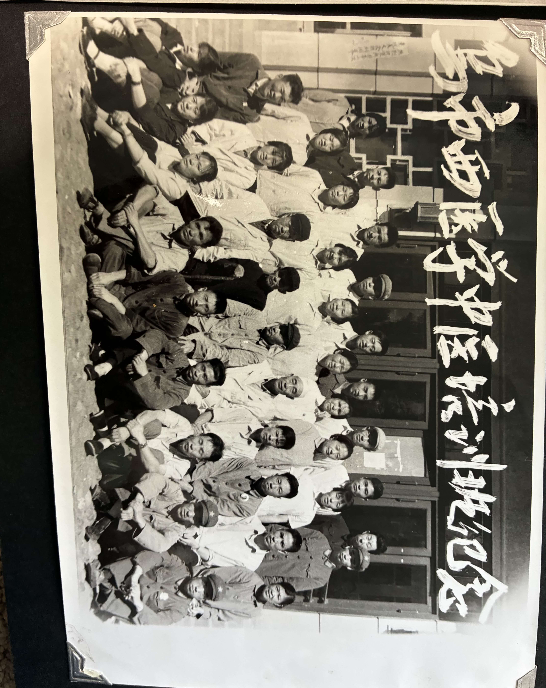
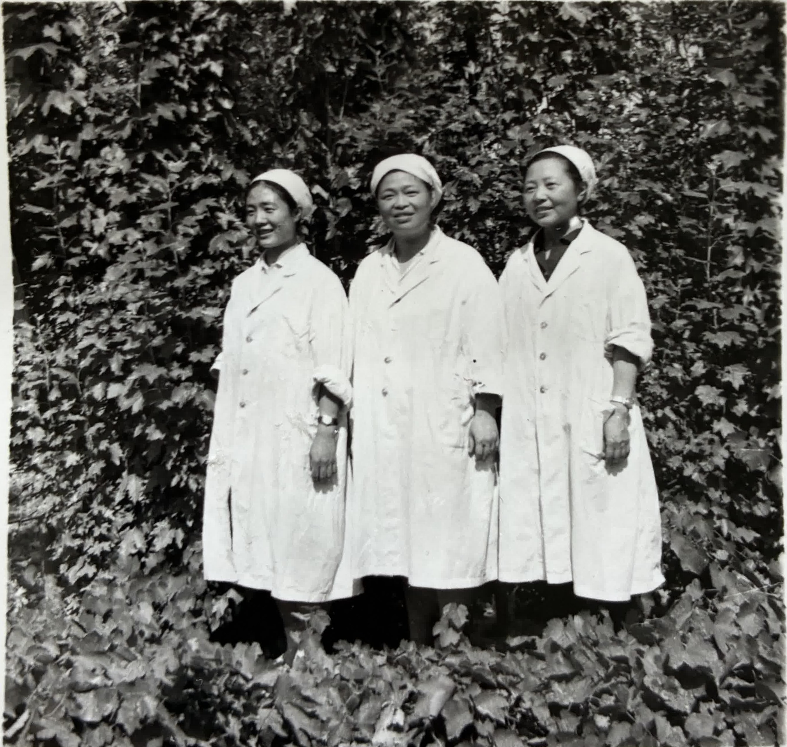
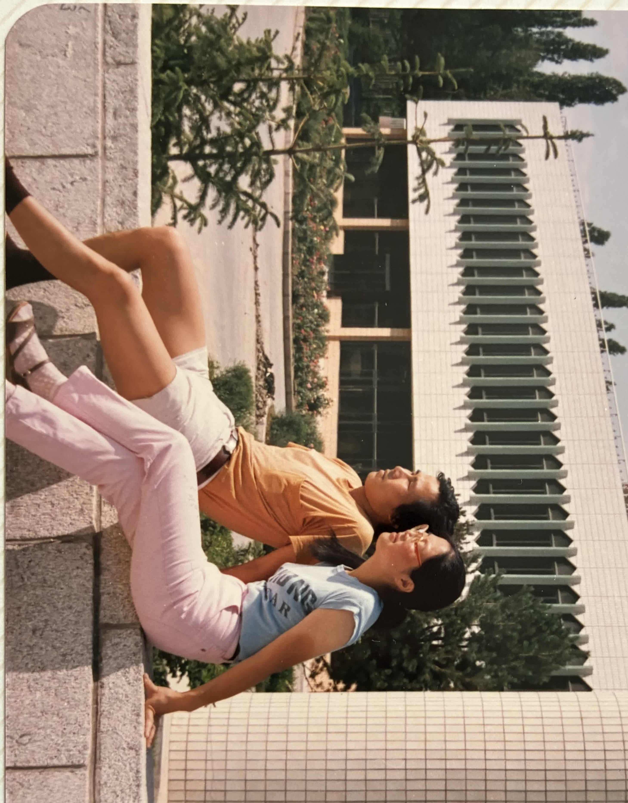
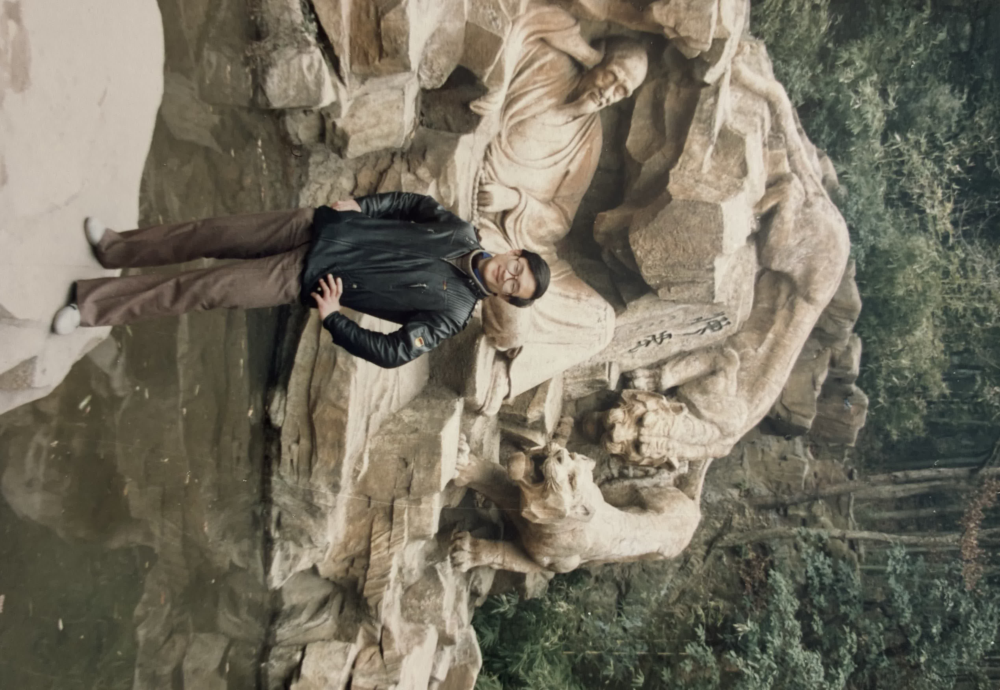
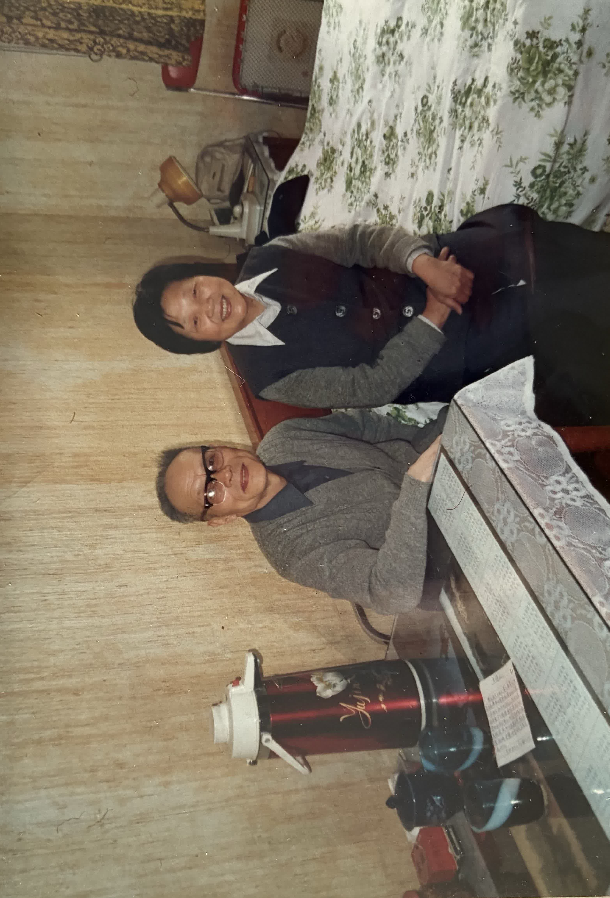
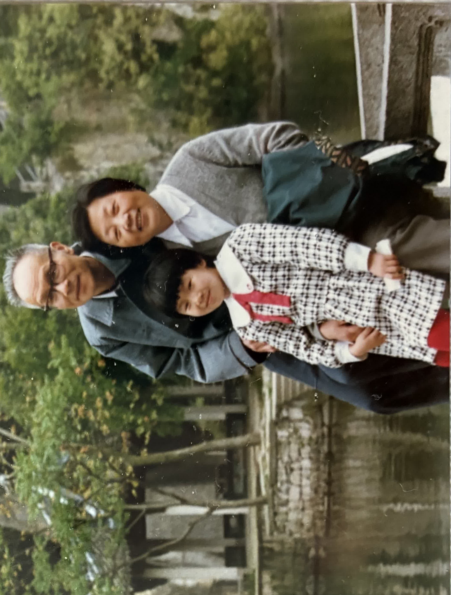
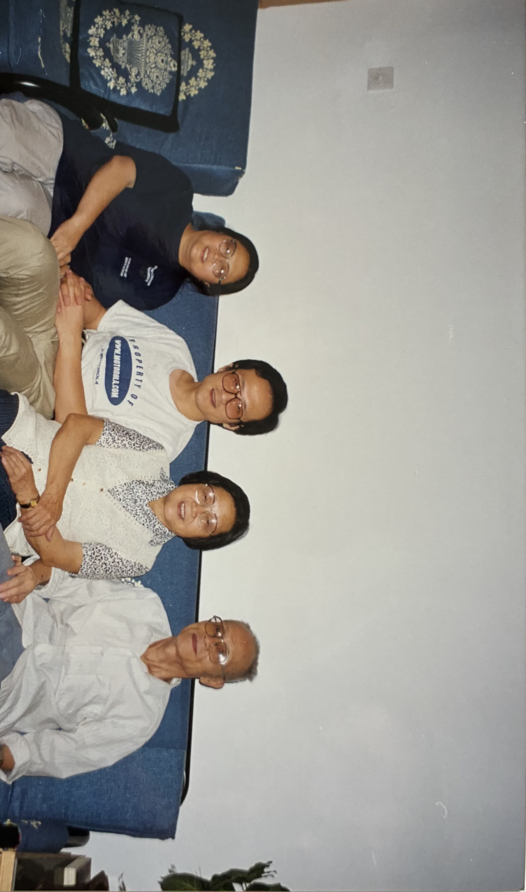

从封面切入一部家庭照相史
这是一份基于 Fan Family 数据集的可视化研究报告。数据集包含 10 个相册批次、200 余张照片及 11 份口述历史 transcript，记录了一个中国家庭从江南到边疆、再从边疆回望江南的迁徙史。
每一本相册的封面都是时代的视觉符号：S 相册的缎面牡丹、B 相册的《白毛女》、H 相册的西湖三潭印月、D 相册的小狗图案。这些封面像一层"皮肤"，包裹着家庭在不同时代的私人记忆。
点击左侧书架上的相册，查看那个时代的故事、引语与照片。
S 相册
1953—1979
时代故事
1951 年，范瑶珠从上海伯特利高级护理助产学校毕业。1953 年，她瞒着家人报名去新疆。孙钢在上海江安区法院工作，得知后放弃一切追随而去，甚至搭上了一支秦腔剧团的卡车。
这本相册里的照片多为正式肖像、工作合影、政治荣誉照。照片是一种仪式：求学、结婚、工作、被评为"妇女建设社会主义积极分子"。照相馆标识"FLY 飛一"、手工上色结婚照、省级机关保健员训练班结业合影，都是这个时代家庭摄影的典型形态。
代表性照片




B 相册
1964—1973
时代故事
1967 年，乌鲁木齐发生严重武斗。范瑶珠安排 12 岁的女儿孙葛带着 5 个月大的弟弟孙晓舞逃往上海。孙晓舞先后被寄养在上海邻居家和杭州姑姑家。1969 年，孙葛从上海返回新疆；1970 年学校复课；1972 年孙葛下乡。
这本相册里，政治符号无处不在：毛主席像章、红卫兵袖章、军装式服装。但照片真正记录的，是一个家庭在时代动荡中被迫分离、又努力维系亲情的日常。
代表性照片




H 相册
1952—1980
时代故事
H 相册跨越 1952 年至 1980 年，记录了范瑶珠从青年护士到边疆医疗骨干的成长轨迹。相册里有她在市立第一传染病院的工作照、西医学中医培训班纪念、下乡巡回医疗、创办护士培训班。
西湖三潭印月的封面构成了一种隐喻：相册的主人始终带着江南的审美记忆，在边疆的土地上建立事业与家庭。每一次翻看相册，都是一次从新疆向江南的回望。
代表性照片


L 相册
1985
时代故事
1980 年代，彩色胶卷普及，家庭摄影从照相馆走向日常生活。L 相册里的照片姿态放松、色彩鲜艳：家中的六人合影、人民大会堂前的侧身坐姿、国际饭店前的游客照。
这本相册标志着照相功能的重要转变：它不再只是记录人生大事，而是捕捉家庭团聚的日常瞬间。风景封面也反映了改革开放后旅游文化的兴起。
代表性照片



D 相册
1990—1991
时代故事
1990 年春天，范家一家到上海浦东峨山路表姐家探亲。随后前往杭州，孙钢与分别四五十年的兄弟姐妹终于重逢；1991 年 5 月 2 日，三兄弟在杭州再次合影。
这本相册是 Fan Family 故事的高潮之一：从 1950 年代的政治迁徙，到 1990 年代的经济开放后返乡，照片里的笑容、餐桌、江南园林，都是对"分离"主题的一次温柔回应。
代表性照片




C 相册
2000
时代故事
2000 年，照相已经完全日常化。不需要照相馆，不需要庄重姿态，家庭聚餐时随手一拍，就是最重要的家庭影像。餐桌上的菜肴、举杯的动作、背景的挂钟与餐边柜，构成了 21 世纪中国家庭的典型视觉。
C 相册样本虽小，但它代表了一个重要转折：家庭摄影从"记录人生大事"彻底转向"记录日常生活"，而团聚本身成为跨国家庭最核心的仪式。
代表性照片

